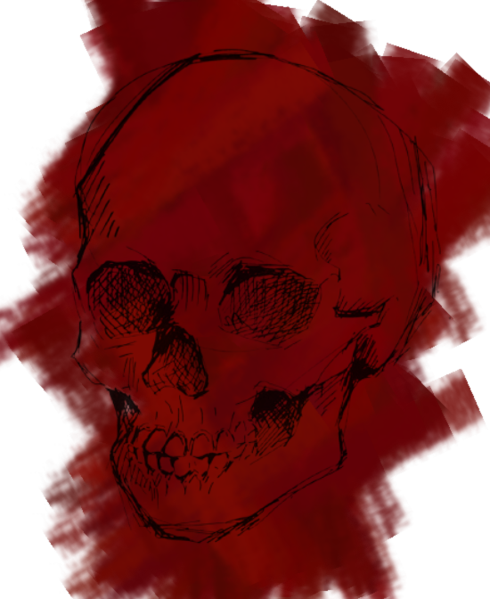

Pouco tempo depois de tudo... "Aquilo", a minha vida ficou nublada, sentindo um sentimento profundo de toska que não sai do meu ser... E eu sei que vai ficar grudado até... Eu entender? Mas eu já sei o que eu fiz... Até eu esquecer talvez? A realidade é estranha.

Quando sinto cheiro de querosene me vejo em um lugar de escombros queimados. Eu sei o que aconteceu ali, fui eu quem fiz aquilo, mas era para sentir remorso? Foi uma justiça, suja, mas ainda justa. A memória não funciona assim, não é verdade?
Mas o que me estranha é o cheiro de algo doce, não lembro o decorrer dos outros dias, mas sinto que minha cabeça não está mais no lugar. Desde quando meus olhos eram tão brilhantes assim? Talvez esta seja minha nova realidade. Um pós-algum tempo, suspenso entre o que era e o que nunca será.